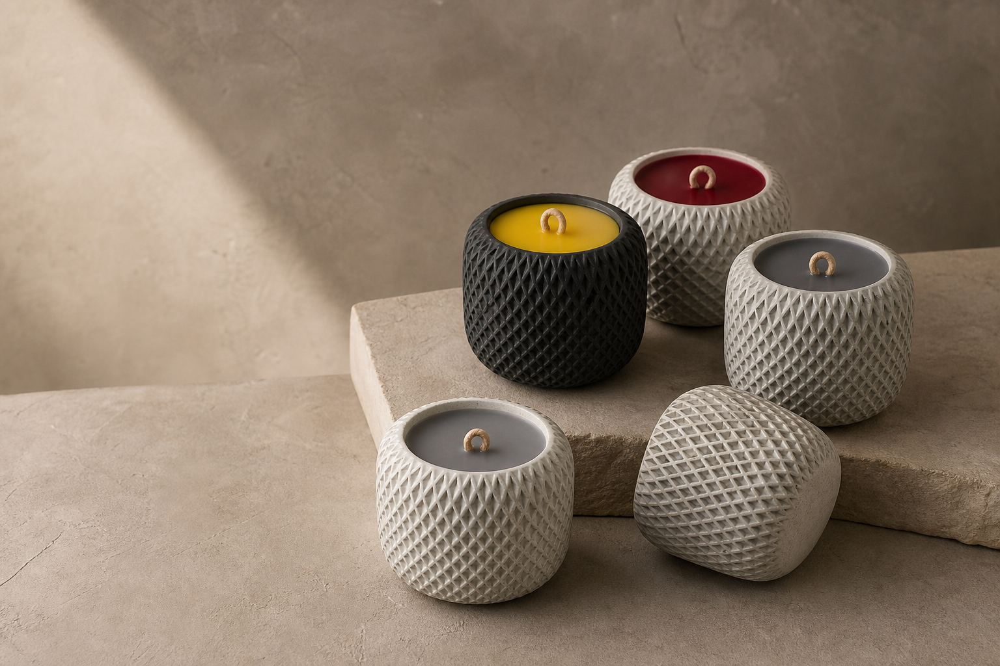

Design
We develop balanced forms that feel decorative before they are functional.
Designed, cast and finished in our own studio
We design and manufacture every Still & Ember object ourselves, balancing the raw character of concrete with precise, considered finishing.

Direct from the maker
Our work begins with an original form and a carefully developed mould. Concrete is mixed in small batches, poured, cured, released, sanded, and sealed before a candle is ever poured. Subtle differences are part of the material and proof that each object was made individually.
Keeping the entire process in-house gives us control over quality and the freedom to create custom colours, finishes, and forms.
The making process
We develop balanced forms that feel decorative before they are functional.
Each vessel is poured by hand using our original moulds and concrete blend.
Every surface is refined, inspected, and sealed individually.
Wax and a natural wood wick complete the object in our studio.